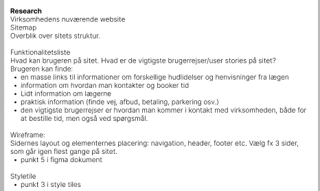

RESEARCH
Research hjalp mig med at forstå målgruppe, behov og inspiration, så mine valg blev mere begrundede.
Her præsenterer jeg min arbejdsproces og de metoder, jeg har lært, der gør anvendt i løbet af 1. semester. Processen viser, hvordan jeg arbejder med research, analyse, idéudvikling, design og test i praksis.
Research hjalp mig med at forstå målgruppe, behov og inspiration, så mine valg blev mere begrundede.
Moodboards blev brugt til at samle inspiration og definere retning for stil, farver og stemning inden designet blev fastlagt.

Style-tiles blev anvendt til at afprøve og fastlægge det visuelle udtryk, herunder farver, typografi og grafiske elementer. Valget af style-tile blev truffet på baggrund af en Likert-test, hvor den valgte løsning scorede højest i forhold til professionalitet og personlighed.
Jeg brugte en Likert-test til at indsamle feedback på forskellige designvalg og vurdere oplevelsen af fx professionalitet og personlighed.
Jeg skabte wireframes for at planlægge layout og struktur, så jeg kunne fokusere på funktionalitet og brugeroplevelse uden at blive distraheret af visuelle elementer.
Jeg arbejdede fra LoFi-wireframes til HiFi-prototype for at teste struktur og flow tidligt og først senere finpudse det visuelle design.
Jeg anvendte heuristisk evaluering til at vurdere brugervenlighed og finde forbedringsmuligheder i layout, navigation og tydelighed.